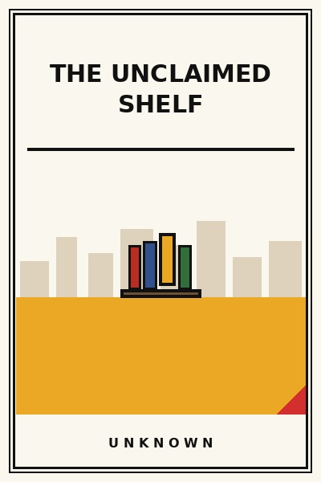

The Unclaimed Shelf
Where category monopolies actually hide in overlooked niches.
READ FULL BREAKDOWN (FREE) →The Big Idea
Monopolies are not built in crowded red oceans; they are built by spotting the unglamorous shelf where nobody else wanted to compete.
Key Lessons
The Glamour Trap
Entrepreneurs flock to glamorous consumer apps and AI wrappers, leaving essential industrial tools untouched.
The Incumbent's Blind Spot
Large corporations ignore markets with ten-crore total addressable sizes because it does not move their stock needle.
Own the Whole Micro-Category
It is vastly more profitable to own eighty percent of a small pond than point one percent of an ocean.
Pricing Power in Obscurity
When you are the only supplier of a mission-critical component, customers pay without questioning invoices.
High Barriers Through Specificity
Building deep regulatory and domain specificity keeps generic software giants from ever cloning you easily.
Expanding from Strength
Once you dominate the initial shelf, expanding into adjacent shelves becomes ten times cheaper.
The Stealth Advantage
Never brag in industry press about your highly profitable niche; keep your head down and compound cash quietly.
The Graveyard Proves It
Where this advice breaks: Where this advice breaks: some shelves remain unclaimed because customer demand is genuinely zero or structurally bankrupt.
Read the autopsy: circuit-city →